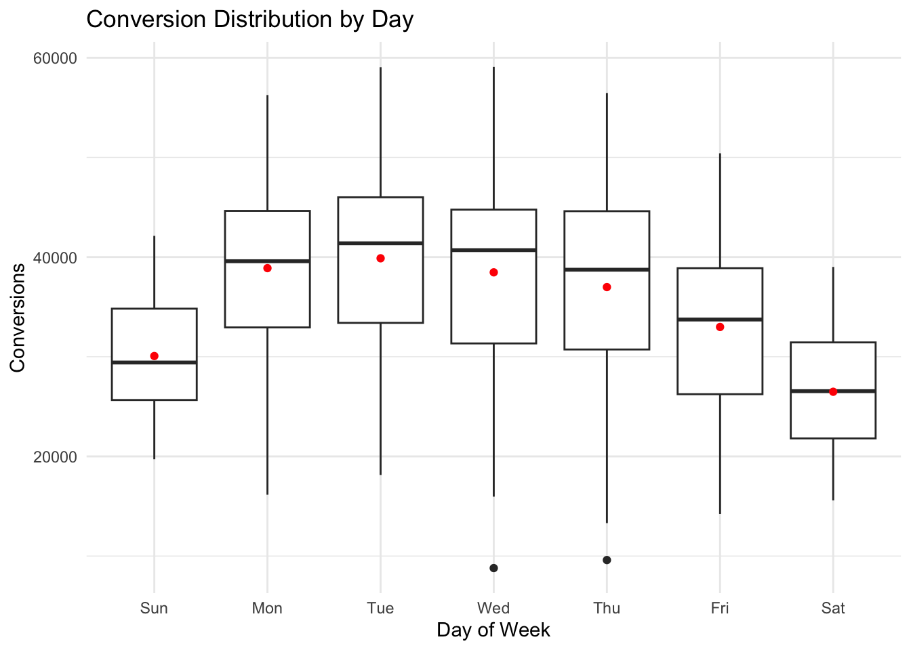

Artifex - Fall 2023
2023-10-24
Chapter 1 Topics in Time Series
1.1 Autocorrelation
A central concept in time series analysis is autocorrelation. This is the correlation between \(y_t\) and its lagged value. For a lag of \(h\), this is the correlation between \(y_t\) and \(y_{t-h}\). Let’s first review correlation. For two vectors of data, \(x\) and \(y\), the correlation between the two is,
\[\begin{align} \text{cor}(x,y) &= \frac{\text{cov}(x,y)}{\sigma_x \sigma_y} \\ &= \frac{ \sum_i (x_i - \bar{x})(y_i - \bar{y})}{ \sqrt{ \sum_i (x_i - \bar{x})^2 \sum_i (y_i - \bar{y})^2 }} \end{align}\]
set.seed(1)
n = 5
x = rnorm(n)
y = rnorm(n)
sum( (x - mean(x)) * (y - mean(y))) / ( (n-1) * sd(x) * sd(y) )
cor(x, y)The autocorrelation applies this concept to a single time series. Autocorrelation is the correlation of a time series with a delayed copy of itself as a function of delay. The autocorrelation for a time series \(y\) at lag \(k\) is:
\[\begin{equation} r_k = \frac{ \sum_{t = k + 1}^{T} (y_t - \bar{y})(y_{t-k} - \bar{y}) }{\sum_{t=1}^T (y_t - \bar{y})^2 } \end{equation}\]
Here is a simple example of computing a lag 1 autocorrelation.
a = c(1,2,3,4,5)
a1 = c(1,2,3,4)
a2 = c(2,3,4,5)
# lag 1 autocorrelation
sum( (a1 - mean(a)) * (a2 - mean(a))) / (sum( (a - mean(a))^2 ) ) # by hand
(acf(a))1.2 Assignment 3
Write a function in R that takes a vector and a lag value, \(k\), as arguments and outputs that autocorrelation of the vector with the lag \(k\) copy of itself.
Compute the lag 1 through 14 acf for the Kayak visits data (group by date to get total visits per day). What do you notice? Verify the results of your function using
acf.Find an economic variable of interest and compute the lag 1 through lag 10 acf of the variable. Do the same thing after applying the
difffunction to your data. Describe the results of this analysis. What does it tell you, if anything, about the variable you chose?
1.3 Change Points
1.3.1 CUSUM
Consider the following time series \(x_t\), for \(t = 1, \ldots, T\), where \(T=100\). Suppose you are an analyst at an industrial company and this is a data stream from some instrument that you expect to generate random noise around 0. If there is a shift in the mean of this process, that signals trouble. Looking at this data, do you think there is any shift?
set.seed(1)
x1 = rnorm(75, 0, 0.5)
x2 = rnorm(25, 0.25, 0.5)
xt = c(x1, x2)
plot(xt, type = "l")
It is hard to say. One method to detect change points is CUSUM. This method works by incorporating all of the information in the sequence in the form of a cumulative sum. To implement this method, first standardize the data. We can call the new time series \(y\) where each element, \(y_i\), can is a standardized version of the corresponding \(x_i\):
\[\begin{align} y_i = \frac{x_i - \mu_0}{\sigma} \end{align}\]
Then, define two vectors, \(C^+\) and \(C^-\) whose first element is 0. That is, \(C_1^+ = C_1^- = 0\). For \(i \in (2,\ldots,T)\),
\[\begin{align} C_i^+ &= \text{max}(0, y_i - K + C_{i-1}^+) \\ C_i^- &= \text{min}(0, y_i + K + C_{i-1}^-) \end{align}\]
The parameter \(K\) is typically defined as the shift in means that you hope to detect, \(\delta \sigma\), measured in standard deviations. This is implemented in the qcc package within the cusum function, where the parameter \(\delta\) is controlled by se.shift.

1.4 Assignment 4
Write a function to generate vectors \(C_i^+\) and \(C_i^-\) for a given time series and \(\delta = 1\).
Use the function on simulated data. How does it perform? Compare with output from
cusum. Show the plotted data to another team and ask them for an eyeball estimate of the changepoint. Who won: (wo)man or machine?